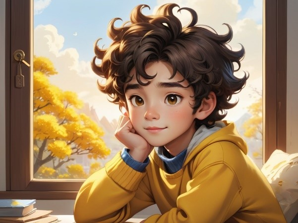
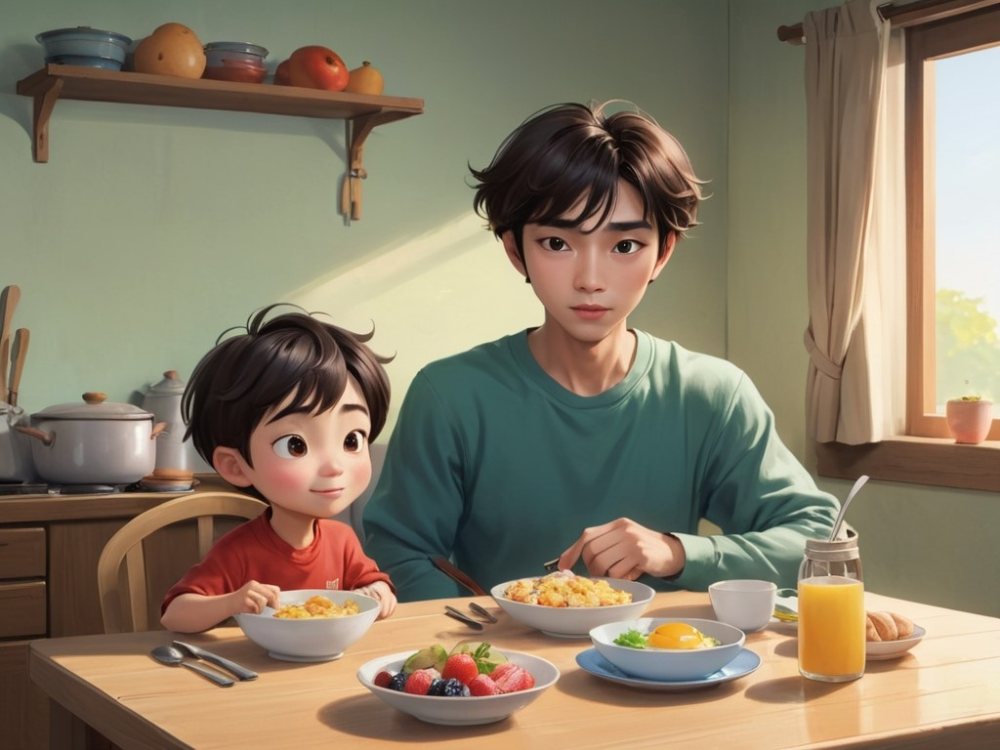
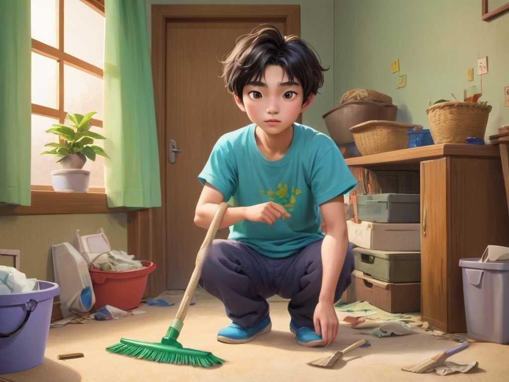
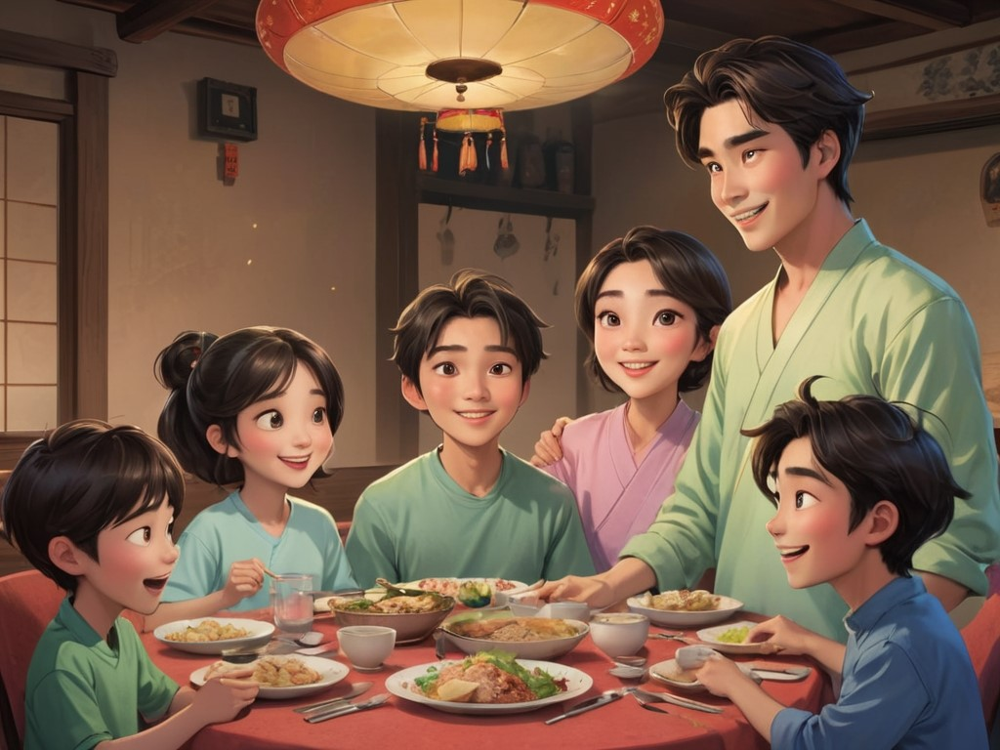

場景 1 / Scene 1
小俊穿著黃色毛衣和靴子，捲曲的頭髮，帶著認真的表情，準備迎接新的一天。他打開窗戶，看到外面的陽光，心情愉快。
Xiao Jun, dressed in a yellow sweater and boots, with curly hair and a thoughtful expression, is ready to start a new day. He opens the window and smiles as he sees the sunshine outside.
場景 2 / Scene 2
小俊坐在餐桌旁，媽媽準備了營養豐富的早餐，媽媽告訴他，吃早餐能為一整天提供能量。
Xiao Jun sits at the dining table where his mom has prepared a healthy breakfast. His mom tells him that eating breakfast gives him energy for the whole day.
場景 3 / Scene 3

小俊穿上衣服準備出門，他照鏡子整理頭髮，然後學會自己穿鞋。
Xiao Jun puts on his clothes and gets ready to go out. He looks at himself in the mirror and fixes his hair, then learns to put on his shoes by himself.
場景 4 / Scene 4

在學校的操場上，小俊和同學們一起跳繩、踢足球，大家玩得非常開心。
At the school playground, Xiao Jun plays jump rope and soccer with his classmates. Everyone is having fun.
場景 5 / Scene 5

上課時，小俊專心聽老師講課，學到了耐心聆聽的道理。
In class, Xiao Jun listens carefully to the teacher’s lesson and learns new things. He learns how to listen patiently.
場景 6 / Scene 6

午餐時，小俊和朋友們分享自己的午餐，學會了與他人分享，並記得對朋友們表示感謝。
During lunchtime, Xiao Jun shares his lunch with his friends. He learns to share with others and remembers to thank his friends.
場景 7 / Scene 7

放學後，小俊去了公園，看見一個小朋友在抓蝴蝶，他學會了如何輕輕地放飛蝴蝶，珍惜大自然。
After school, Xiao Jun goes to the park and sees a little friend catching butterflies. He learns how to take care of nature by gently letting the butterfly go.
場景 8 / Scene 8
回到家後，小俊幫忙整理房間，體會到幫助家人是很重要的責任。
When Xiao Jun gets home, he helps his mom tidy up the room. He realizes that helping out at home makes him more responsible.
場景 9 / Scene 9
晚餐時，小俊和家人一起坐下來，開心地分享今天的經歷，學會珍惜與家人共度的時光。
During dinner, Xiao Jun sits with his family and happily talks about his day. He learns to cherish the time spent with family.
場景 10 / Scene 10

小俊躺在床上，回想今天的冒險，感到滿足和快樂，期待明天的到來，安穩地入睡。
Xiao Jun lies in bed, reflecting on the adventures of the day, feeling fulfilled and happy. He looks forward to tomorrow and falls asleep peacefully.